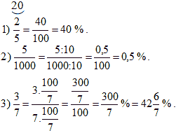
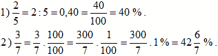

Например (Фиг. 2): Цялото „нещо“ е разделено на 3 равни части (Y = 3) и сме взели 2 части (X = 2).
ако a < b, то дробта е правилна, като < 1.
ако a ≥ b, то дробта е неправилна, като ≥ 1.
Десетичната дроб е число с цяла и дробна част, които са разделени със запетая, наречена десетична запетая.
Делим числител (11) на знаменател (3) (Фиг. 4).
I начин: Разширяваме до дроб със знаменател 10, 100, 1000 и т.н, ако е възможно. Например:
II начин: Делим числител (2) на знаменател (5), ако е възможно. Например:
Виж (Фиг. 5):
О – Обикновена дроб със знаменател 100.
I начин: – Умножаваме (или делим) числител и знаменател с подходящо число, така че в знаменател да се получи числото 100. Например:

II начин: – Делим числител на знаменател, ако е възможно. Например:

Задачи от I вид: Намиране на част от число – Намерете x, ако от 12 = x.
Решение: от 12 = x . 12 = x x = 8.
Задачи от II вид: Намиране на число по дадени части от него – Намерете x, ако от x = 8.
Решение: от x = 8 . x = 8 x = 8 : = 8 . = 12.
Задачи от III вид: Намиране на неизвестна част от число – Намерете x, ако x от 12 = 8.
Решение: x от 12 = 8 x . 12 = 8 x = .
При трите вида задачи имаме равенство представено на Фиг. 6:
Задачи от I вид: Намиране на процент от число – Намерете x, ако 5 % от 12 = x.
Решение: 5% от 12 = x x = x = 0,6.
Пример: Виж Зад. № 19 от изпита през 2016 г.
Задачи от II вид: Намиране на число по даден процент от него – Намерете x, ако 5 % от x = 0,6.
Решение: 5 % от x = 0,6 0,05 . x = 0,6 x = 0,6 : 0,05 x = 12.
Задачи от III вид: Намиране на процентно отношение – Намерете x, ако x % от 12 = 0,6.
Решение: x % от 12 = 0,6 . 12 = 0,6 x = 0,6 : 0,12 = 5.
При трите вида задачи имаме равенство представено на Фиг. 7:
Частното на тези две числа, където b ≠ 0. Изписва се a : b или .
Две отношения, свързани със знака за равенство. Изписва се a : b = c : d или , като a ≠ 0, b ≠ 0, c ≠ 0 и d ≠ 0.
a . d = b . c.
а) Намерете действителното разстояние между два града, измерено в километри, ако върху картата то е 25 cm.
б) Разстоянието между два града е 750 km. Какво е разстоянието между тях върху картата.
а)
750 km.б)
25 cm.Пример: Виж Зад. № 21 от изпита през 2016 г.
| Път в km | Изразходвано гориво в Литри | |
| I случай | 100 | 8 |
| II случай – от София до Самоков | 60 | x |
12 лв.120 cm2.I съдружник получил 2х лв.
II съдружник получил 3х лв.
III съдружник получил 5х лв.
I съдружник получил 2х = 2 . 1 785 = 3 570 лв.
II съдружник получил 3х = 3 . 1 785 = 5 355 лв.
III съдружник получил 5х = 5 . 1 785 = 8 925 лв.
Виж Фиг. 8
Виж Фиг. 8
Пример: Виж Зад. № 22 от изпита през 2012 г.
Правоъгълната диаграма (в някои случаи се нарича хистограма) се явява стъпаловидна диаграма, показваща данни (обикновено нанесени върху ординатната ос) разпределени в равни интервали (обикновено тези равни интервали се нанасят върху абсцисната ос като равни единични отсечки).
Кръговата диаграма се състои от кръг, разделен посредством негови радиуси на области, пропорционални на данните, които представляват.
Пример: Виж Зад. № 20 от изпита през 2015 г.